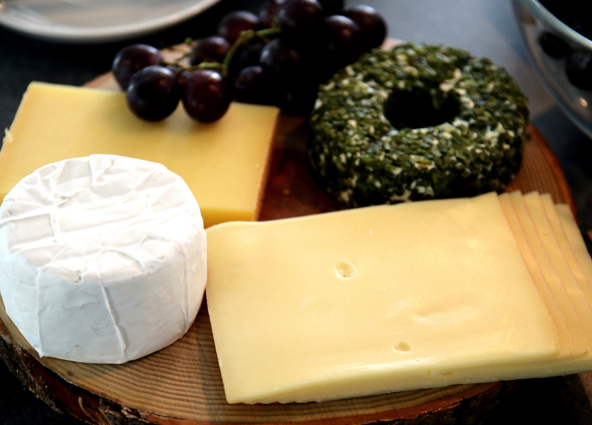

デリへの想い
惣菜や軽食を通じて、日常の食卓に寄り添うデリであることを目指しています。具体的な調理法や品目については現在確認中ですが、手をかけた一皿をお届けできるよう心がけています。
About
33という名前に込めた思い
店名「Trenta tré(トレンタ・トレ)」は、イタリア語で「33」を意味する言葉です。弘前には明治・大正期の洋館建築が今も点在し、その扉や柵には真鍮の番号プレートが掲げられている情景があります。当店の「33」も、この街の扉に刻まれた一つの番号のように在れたら、という思いから名付けました。店名に込められたより詳しいエピソードについては、現在確認中です(仮)。
当店がある弘前市は、城下町としての面影を残す石壁や洋館建築が点在する街です。そうした街並みの中で、落ち着いた雰囲気の店であり続けたいと考えています。また弘前はりんごの産地としても知られる土地であり、この街の魅力を大切にしたいという思いで店を営んでいます。地元食材の使用状況については現在確認中であり、確認が取れた際には具体的な内容に差し替えます。
惣菜や軽食を通じて、日常の食卓に寄り添うデリであることを目指しています。具体的な調理法や品目については現在確認中ですが、手をかけた一皿をお届けできるよう心がけています。
コーヒーや紅茶とともに、少し足を止めて休んでいただける時間を大切にしています。ドリンクの種類や豆の産地等の詳細は現在確認中です。
石壁と真鍮を思わせる落ち着いたトーンの空間で、洋館の街・弘前の雰囲気に馴染む店づくりを目指しています。席数や内装の詳細は現在確認中です。

一部の写真はフリー素材のイメージです。実際の店内・お料理写真は貴店ご提供のものに差し替えます